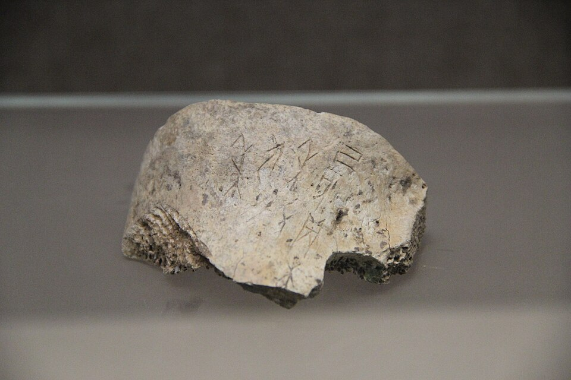
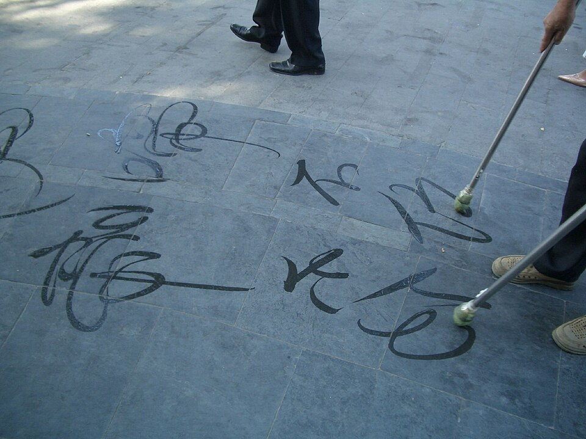
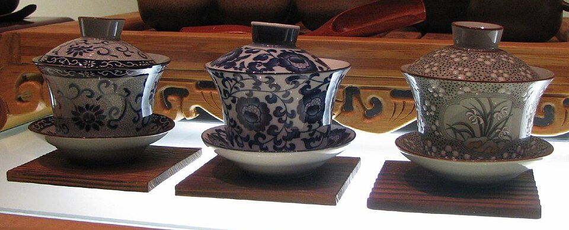
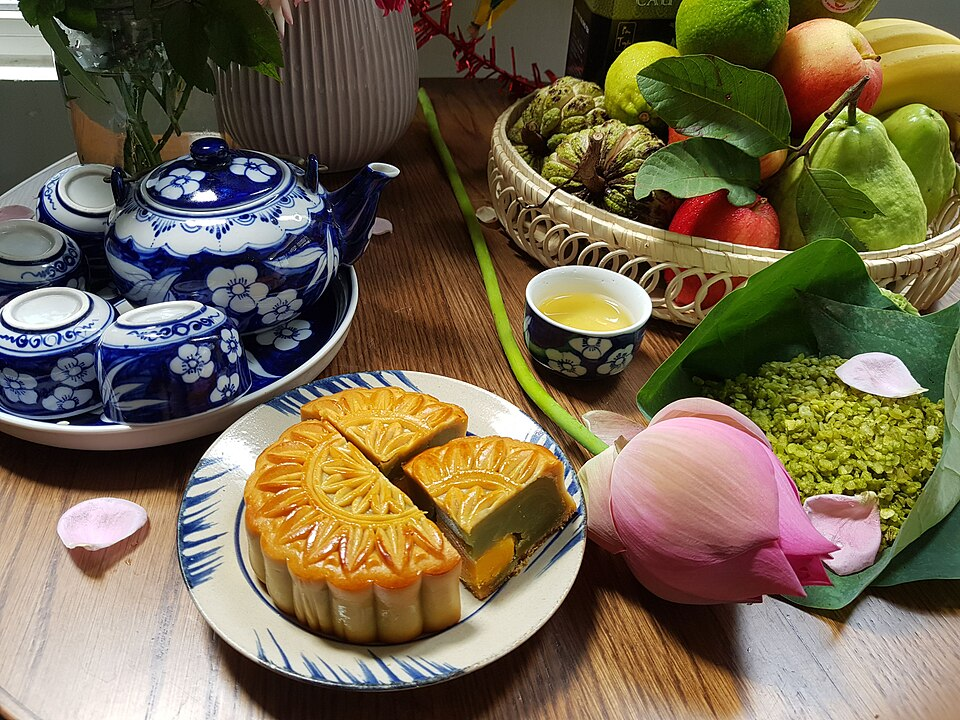
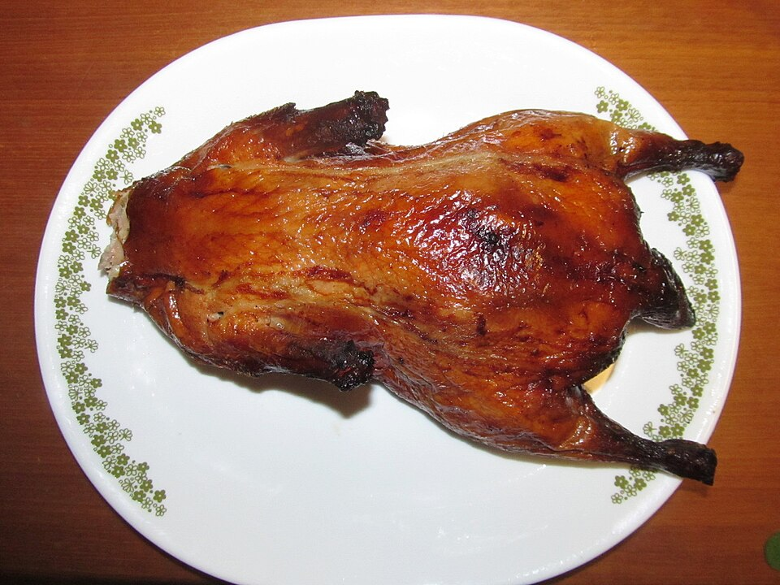
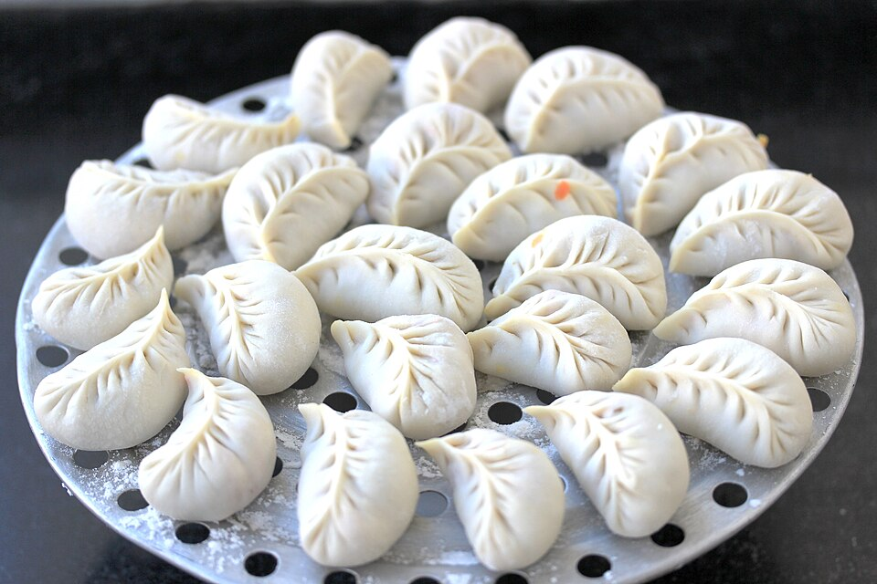

Vậy bắt đầu 20 phút/ngày nhé.
Lộ trình 30 ngày cho người mới bắt đầu — không cần biết tiếng Trung trước.
Trả lời 6 câu để SunMoon hiểu bạn hơn, rồi chuyển khoản để nhận mã học.
2 · Bạn học tiếng Trung để làm gì? (chọn nhiều)
3 · Trình độ hiện tại?
4 · Mỗi ngày bạn học được bao lâu?
5 · Bạn biết SunMoon qua đâu?
Mọi phản hồi về app học, bạn nhắn Zalo SunMoon nhé:
Cho người mới bắt đầu — mỗi ngày 1 bài, 20 phút





